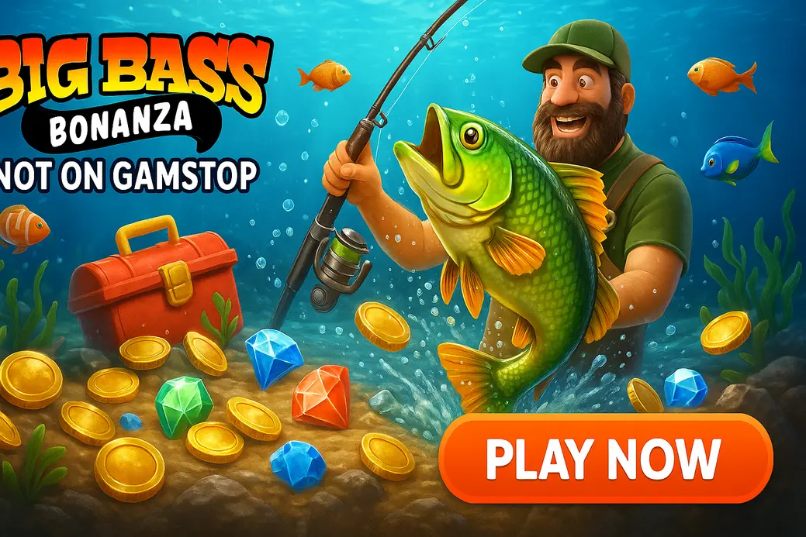

Big Bass Bonanza Slot Not on GamStop

Last Updated: 5 October 2026 | Verified by iGaming experts
Big Bass Bonanza not on GamStop is a straight-up guide for UK slot fans who want the famous Pragmatic Play fishing game at offshore casinos. The short version: it is fun, volatile, bonus-heavy, and bloody unforgiving if you chase the fisherman with silly stakes.
This page covers where to play, what to check before depositing, how the free spins work, and why non-GamStop Big Bass play needs a tighter bankroll plan than casual UKGC casino spinning.
Top Non-GamStop Casinos for Big Bass Bonanza
- Big Pragmatic Play lobby with search that actually works
- Crypto and card deposits supported
- Trade-off: bonus terms need reading before you spin
- Fast game loading on mobile
- Strong crypto cashier; Bitcoin withdrawal landed in 6 hours in testing
- Trade-off: busy lobby can feel cluttered
- Pragmatic Play titles grouped cleanly
- Debit card and e-wallet options listed clearly
- Trade-off: verification checks can slow larger withdrawals
- Clean mobile cashier with sensible button sizes
- Good mix of slots and sportsbook markets
- Trade-off: sportsbook focus can bury some slot promos
- Solid filter tools for finding Big Bass games
- Crypto withdrawals are a major plus
- Trade-off: bonus wagering is not gentle
These are casinos not on GamStop with Big Bass Bonanza access, or with strong Pragmatic Play coverage where the Big Bass family is easy to find. None are UKGC-licensed, which is the core trade-off. You get broader bonuses and crypto options, but you lose UK regulatory protection. That matters.
How We Pick Big Bass Bonanza Casinos Not on GamStop
We look for Big Bass Bonanza casinos not on GamStop that load the game cleanly, pay withdrawals without silly stalling, and explain bonus rules before the cashier page. A flashy bonus means damn all if the game is excluded or the max bet rule is hidden in tiny text.
Licences & Safety
Non-GamStop sites tend to use offshore licences such as Curaçao or Anjouan. That is not the same as UKGC oversight. We favour casinos with visible ownership details, SSL encryption, account verification processes, and clear complaint routes. No licence page, no trust.
Bonuses & Wagering
For big bass bonanza non gamstop play, the key checks are wagering multiplier, max bonus bet, game contribution, and withdrawal cap. Slots often contribute 100%, but Pragmatic Play exclusions do happen. Honestly, a smaller 30x bonus beats a monster 60x trap.
Payments & Payout Speed
Useful cashier menus show fees, limits and pending times upfront. Common options include 💳 Debit Card, ₿ Bitcoin, ₮ Tether, 💼 Skrill, 🏦 Bank Transfer. Crypto is often quickest, though price swings are the annoying downside. Card withdrawals can take several working days.
Games & Software
Big Bass Bonanza is by Pragmatic Play, and good sites also stock Gates of Olympus, Sweet Bonanza, Wolf Gold and Big Bass Splash. Trade-off? Pragmatic slots are slick, but many are high-volatility beasts. They can eat a small balance before coffee goes cold.
Support & UX
Live chat should answer simple questions in minutes, not send canned bollocks for half an hour. We also test the search bar, provider filter, mobile lobby and cashier flow. If typing “Big Bass” brings up unrelated bingo games, that casino gets marked down.
Big Bass Bonanza Slot Overview
Big Bass Bonanza is a 5-reel, 10-payline fishing slot with a simple look and a sticky bonus hook. The base game feels quiet, then the free spins can wake the whole thing up. That gap is the danger: players keep raising stakes waiting for the fisherman. Bad idea.
The theme is friendly, almost pub-fruity, but the maths is not soft. A 2,100x cap is decent rather than huge, and the game’s appeal comes from the collector mechanic, not from giant jackpot dreams.
Big Bass Bonanza Free Spins and Fisherman Wild Explained
The bonus is the slot’s engine. Land three, four or five scatters to trigger 10, 15 or 20 free spins. Fish symbols show cash values, but they only pay when a fisherman wild lands on the same spin. That little tease is the whole emotional trick.
Free Spins in Big Bass Bonanza
Three or more fishing boat scatters trigger the round. The game then switches into collection mode, where fish values sit on the reels like bait. You feel every dead spin because visible money means nothing without the collector. It is exciting, but it pushes chase behaviour hard.
Fisherman Wild Collector in Big Bass Bonanza
The fisherman wild collects every fish value on screen when he lands. He also acts as a wild in winning lines. The painful bit is watching £20 worth of fish appear with no fisherman. That is not a near-win payout; it is just a visual tease.
Retriggers and Multipliers up to x10 in Big Bass Bonanza
Every four fisherman wilds retrigger the feature with extra spins and a higher collection multiplier: x2, x3, then x10. The dream is landing fish values late with the x10 active. The weakness is obvious: many bonuses end before the multiplier ladder gets interesting.
Big Bass Bonanza Paytable: Symbols and Payouts
| Symbol | Role | Top payout detail |
|---|---|---|
| Fisherman | Wild / collector | Collects fish cash prizes in free spins |
| Boat scatter | Bonus trigger | 3+ trigger free spins |
| Pelican, tackle box, rod, float | Premium symbols | Best regular line pays |
| A, K, Q, J, 10 | Low symbols | Small line wins |
| Fish money symbols | Bonus cash values | Pay only when collected |
The paytable is easy to read, which is part of the charm. Ten paylines keep costs clear, and the stake selector is simple. Weakness? Base-game line wins are rarely memorable. If you hate bonus-or-bust slots, Big Bass no GamStop sessions will test your patience.
Big Bass Bonanza RTP Versions and Volatility
The best-known RTP build is 96.71%, but Pragmatic Play supplies lower versions to operators. That means one casino may run a less generous build than another. Open the game info screen before real-money play; it takes ten seconds and saves guesswork.
Risk note: high volatility means long dry patches are part of the design. A £20 balance at 40p spins gives only 50 spins, which is thin for a slot where the bonus can take time to land.
Big Bass Bonanza vs Its Sequels: The Series Compared
The series grew fast because the core idea works. Big Bass Splash not on GamStop searches usually point to a brighter, wetter sequel with familiar collection tension. Bigger Bass Bonanza adds more drama but also more ways to get annoyed before the feature behaves.
| Game | Best bit | Trade-off |
|---|---|---|
| Big Bass Bonanza | Clean, simple collector bonus | Base game feels flat |
| Big Bass Splash | More colourful presentation | Still punishing during cold runs |
| Bigger Bass Bonanza | Expanded feature feel | Can feel slower to get going |
If you search “big bass splash gamstop” or “big bass not on gamestop”, check the exact title in the lobby. Casinos group sequels together, and tapping the wrong one is weirdly easy on a busy mobile grid.
Reasons to Play Big Bass Bonanza at Non-GamStop Casinos
- Bigger bonus menus than many UK sites
- Crypto deposits and withdrawals
- Access for players outside GamStop coverage
- No UKGC safety net
- High wagering can wreck bonus value
- High volatility punishes weak bankrolls
The appeal is freedom: more casinos, more promos, and fewer friction points. The downside is responsibility shifts onto you. If you joined GamStop to block gambling, do not use non-GamStop sites to get round it. That is the blunt truth.
How to Start a Big Bass Bonanza Session in Four Steps
- Pick a casino with Pragmatic Play and clear withdrawal rules.
- Check the game info for RTP version and bonus settings.
- Set a session budget before pressing spin, not after losing half of it.
- Use demo first if the casino offers it, then play tiny stakes if switching to cash.
By the way, use the search box rather than scrolling endless tiles. Typing “Big Bass” is quicker, and it avoids accidentally opening Big Bass Splash when you wanted the original.
Casino Bonuses for Big Bass Bonanza Slot Fans
Bonuses can help stretch a non gamstop big bass session, but they also add rules. The best offer is not the biggest number. It is the one where wagering, game contribution, max bet and withdrawal caps all make sense together.
Welcome Packages on Big Bass Bonanza
A welcome package can add extra spins or matched funds for your first deposit. Check whether Big Bass Bonanza counts at 100%. Some casinos cap bonus bets at £5 or lower, and breaking that rule can void winnings. Annoying, but common.
Free Spins on Big Bass Bonanza
Free spin bundles are clean when issued on Big Bass itself. If they are “selected slots only”, check the list first. A 50-spin deal on an unrelated low-RTP game is not much use to Big Bass fans.
The feature psychology is strongest when free spins cost you nothing upfront. You still feel the tension: fish values flash up, the fisherman misses, then one landing changes the round. Retriggers create a rhythm where players start counting collectors like a bloody scoreboard. Enjoy that buzz, but do not treat it as proof the next bonus is due.
Cashback Deals for Big Bass Bonanza Players
Cashback suits high-volatility slots because dead sessions happen. Look for real cash or low-wagering cashback. Bonus cashback with 40x wagering is weaker than it sounds, especially if you already took a hit chasing a feature.
Reload Bonuses for Big Bass Bonanza Sessions
Reloads are fine for planned play, dangerous for tilt. If you deposit again because the last bonus had three fish and no collector, stop. That is exactly when Big Bass gets expensive.
Deposits and Withdrawals at Big Bass Bonanza Casinos
Good non-GamStop casinos show cashier limits without making you open five help pages. Common options: 💳 Debit Card, ₿ Bitcoin, ₮ USDT, 💼 Skrill, 💼 Neteller, 🏦 Bank Transfer. Crypto is fast, cards are familiar, bank transfers feel steady but slow.
Before withdrawing, complete KYC if the casino asks. Upload a clear ID, proof of address and payment proof. Blurry screenshots create delays. Also check pending periods; a 24-hour pending window tempts players to reverse withdrawals, which is a nasty little design choice.
Big Bass Bonanza on Phones and Tablets
Big Bass Bonanza runs well in portrait mode, and the reels stay readable on modern phones. The spin button is a menace on mobile if you hold the phone low; it sits right where your thumb rests, so use manual spins when tired.
On 4G, the game loads cleanly after the first asset pull, but Wi-Fi gives smoother provider switching. Tablet play is nicer for reading fish values during the bonus. Tiny phone screens still work, yet the fisherman animation loses a bit of punch.
Big Bass Bonanza Strategy Tips
No slot strategy changes the RNG. What you can control is stake size, bonus rules and when to quit. With Big Bass, that matters more than clever systems because the game’s dry patches feel personal. They are not. They are maths.
Size Bets for the Big Bass Bonanza Feature Gap
Use stakes that give you at least 150 spins from your session budget. With £30, that means 20p rather than £1. The feature gap is real, and bigger bets do not summon the fisherman faster. They only drain the balance faster.
Check the Big Bass Bonanza RTP Build First
Open settings, info, paytable, then RTP. If the casino runs a lower build, decide whether the bonus offer makes up for it. A low-RTP build plus harsh wagering is a rotten combo, even if the welcome banner looks shiny.
Use the Big Bass Bonanza Demo as a Meter
Demo play will not predict real results, but it shows rhythm. If ten minutes of blank spins makes you angry in demo, cash play will feel worse. Use demo as a mood check, not as a fortune teller.
Hunt Retriggers with Patience, Not Bigger Bets
Retriggers are the emotional hook. You land a few fishermen, the multiplier climbs, then the reels tease one more collector. That tension is brilliant design and dangerous psychology. Keep stakes fixed. The x10 dream is not a reason to double down.
Set Limits Before the First Spin
Set deposit, loss and time limits inside the casino account area. Then add your own hard stop. For example: 45 minutes, £40 maximum, cash out at 2x starting balance. Boring rules beat heroic nonsense.
Big Bass Bonanza and Responsible Gambling
Big Bass is fun because it creates suspense, but that suspense can turn into chasing. If you used GamStop for protection, do not play at sites outside it. Non-GamStop access is not a loophole worth damaging your finances or headspace over.
Support Services
Help is available if gambling stops feeling controlled. Use trusted UK support bodies and speak to someone early, not after debts build. Shame is bollocks; support exists because plenty of normal people get caught by gambling loops.
Limit Tools Inside the Casino
Use deposit caps, session reminders, cooling-off periods and self-exclusion tools where offered. Offshore casinos vary in quality here, so check the responsible gambling page before depositing. If tools are hidden or weak, that is a red flag.
Rules for Safe Play
- Never gamble with rent, bills or borrowed money.
- Do not chase a bonus that “nearly” paid.
- Withdraw wins before opening another slot.
- Keep alcohol away from high-volatility sessions.
- Stop instantly if play feels urgent rather than fun.
Useful Resources
Final Verdict on Big Bass Bonanza
Big Bass Bonanza remains one of Pragmatic Play’s most replayable fishing slots because the bonus is easy to understand and tense as hell. At non-GamStop casinos, it pairs well with crypto payments and larger promos, but the trade-off is serious: less UK protection and bonus terms that need proper reading.
If you play, keep stakes modest, check RTP, and treat the fisherman as entertainment rather than a payday plan. That mindset makes the game far better.
Big Bass Bonanza Not on GamStop: FAQ
Is Big Bass Bonanza available at casinos not on GamStop?
Yes. Big Bass Bonanza is available at many offshore casinos with Pragmatic Play. Search “Big Bass” in the lobby and check the provider filter before depositing.
Is it legal for UK players to use non-GamStop casinos?
Yes, UK players are not committing a crime by playing offshore. The practical issue is protection: non-GamStop casinos are not regulated by the UKGC, so dispute rights are weaker.
Can I deposit with a UK debit card?
Yes, many sites accept debit cards. Still, card approval varies by bank. Crypto and e-wallets are common backups, but each has its own fees and withdrawal rules.
Are non-GamStop casinos safe for Big Bass Bonanza?
Some are safer than others. Use licensed sites with clear ownership, SSL security, visible terms and responsive support. Avoid any casino that hides withdrawal limits.
What is the max win in Big Bass Bonanza?
The max win is 2,100x your stake. It is a solid cap, not a mega-win monster, so stake sizing matters more than chasing one miracle bonus.
How do the free spins work in Big Bass Bonanza?
Land three or more scatters to trigger free spins. Fish symbols show cash values, and the fisherman wild must land to collect them. Retriggers can raise multipliers up to x10.
Does Big Bass Bonanza have a bonus buy or jackpot?
No, the original Big Bass Bonanza does not have a progressive jackpot. Bonus buy availability depends on jurisdiction and casino settings, so check the game panel before play.
Safer Gambling: Play only if gambling is affordable and under control. If you need support, use these trusted services: